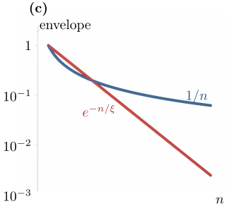
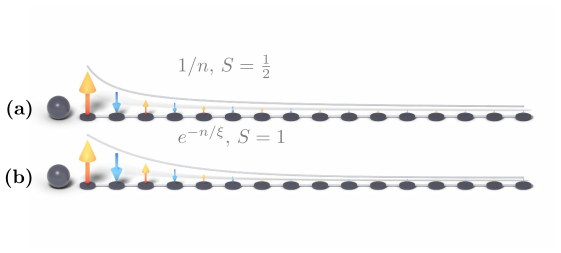

Page 15 of 15 of this session
9.11 Closing summary

In this session we used the ground states of the earlier sessions as the objects of a measurement. These were the Fermi sea and its density of states of Section 2.9, the magnetism of Section 1.14 and Section 6.6, and the superconductors of Section 5.14. We also used the topological phases with the bulk-boundary correspondence of Section 3.7 and the spinons of Section 8.8. On all of them we used one tool, linear response, which we first met in Section 3.2. What we found is the following.
A perturbation that is applied to a quantum material and measured at another place defines a response function. With translational symmetry and time-translation symmetry, it is most natural to write it in \((q,\omega)\)-space, as we saw in Section 9.1.
A classical first example already contains the logic of the whole session. The sign of the divergence in the magnetic susceptibility at high temperature (9.1) predicts, from the disordered phase alone, whether the order at low temperature will be ferromagnetic or antiferromagnetic.
Linear response theory, equations (9.2) and (9.3), computes the leading effect of any perturbation only from the unperturbed ground state. It fails for the orthogonality catastrophe, the Kondo effect and the BCS gap, since none of them are connected to the unperturbed state in a perturbative way, as we saw first in Section 3.3.
For a Fermi sea, the static and dynamical Lindhard functions, equations (9.4) and (9.5), are built only from matrix elements between occupied and empty states close to the Fermi surface. They diverge when a nesting vector connects large parts of that surface, which signals an instability, as in Section 9.4b.
If we sum the interaction to all orders with the random phase approximation (9.6), we find two different sources of divergence. These are electron-hole excitations from \(\chi_0\) itself, and collective plasmon excitations (9.7) from the RPA denominator.
The Stoner criterion (9.8), \(U\chi_0(q,0)=1\), gives again the magnetism of Session 1 and Session 6 as an instability of the paramagnetic response function, and not as an ordered mean-field ansatz imposed by hand. At \(q=0\) it is the criterion \(U\,D(E_F)\geq1\) of (6.3), and at a nested, half-filled Fermi surface it prefers the antiferromagnet.
A local impurity in a metal gives Friedel oscillations (9.9). These are a density modulation with period set by \(2k_F\) and a power-law decay. They give a direct image of the Fermi surface, which is the same physics that an STM measures with quasiparticle interference.
A magnetic impurity in a superconductor creates a Yu-Shiba-Rusinov in-gap bound state (9.10). Its energy crosses zero at a real quantum phase transition, where the fermion parity of the electrons changes and their spin goes as \(S_{\rm tot}=0 \to 1/2\), while a non-magnetic impurity leaves the spectrum almost unchanged.
A vacancy in a topological superconductor or in a Chern insulator gives an in-gap mode because of the bulk-boundary correspondence. This is a diagnostic for topology that a clean and fully gapped bulk spectrum alone cannot give, as we saw in Section 9.8.
The screening of a magnetic impurity in a quantum spin liquid uses directly the Abrikosov-fermion mean-field construction of Section 8.8, and it has the same mathematics as the impurity in a metal of Section 9.6. The induced spin correlation (9.11) decays as a power law for the gapless spin-1/2 chain and exponentially for the gapped spin-1 chain. This gives a general diagnostic of gapped and gapless states from the impurity response alone.
Many impurities at the same time can break translational symmetry in the whole system, which gives rise to Anderson localization. In \(d\geq3\) there is a real mobility edge, which we diagnose with the inverse participation ratio (9.12), and an Anderson insulator, which has no spectral gap but has a transport gap. In one dimension an arbitrarily weak disorder localizes every state, as we saw in Section 9.10b. The localization length then diverges as the disorder strength goes to zero.
Every session so far, this one included, has gone in the same direction. We start from a Hamiltonian, and we compute what it predicts, which can be an observable, a response function or a ground state. Session 10 asks the inverse question. Given only the observed data, can we find the Hamiltonian that produced it? In Section 10.7 we will see that machine learning makes this question precise, and that its training data are forward calculations such as the ones of this session.
After this session we can do the following tasks, and each of them has the section that teaches it.
- Read the sign of the exchange from the intercept of \(1/\chi(T)\). This is in Section 9.2.
- Write the first-order mixing of a state, and name the three cases where it fails. This is in Section 9.3.
- Compute \(\chi_0(q\to0)=D(E_F)\), and find the nesting vector of a band. This is in Section 9.4a and Section 9.4b.
- Sum the RPA series, and tell a plasmon from the particle-hole continuum. This is in Section 9.5a.
- Decide at which \(q\) and at which \(U\) a metal orders first. This is in Section 9.5b.
- Predict the period \(\pi/k_F\) and the envelope of a Friedel oscillation. This is in Section 9.6a and Section 9.6b.
- Compute the Shiba energy, and say where the fermion parity changes. This is in Section 9.7.
- Use a vacancy to test a gapped phase for topology, and say when the test fails. This is in Section 9.8.
- Tell a gapped magnet from a gapless one by the decay of an impurity response. This is in Section 9.9.
- Compute the inverse participation ratio and use its scaling with \(N\), and estimate the localization length \(\xi(W)\) of a chain. This is in Section 9.10a and Section 9.10b.
We put one vacancy in a clean chain. Far from it the density oscillates with the envelope
\[|\delta n(x)|\propto\frac{1}{|x|},\]
and not with \(e^{-|x|/\xi}\). What do we conclude about the ground state?
Show the answers
- A. ✗ False
This is false. A gapped state gives \(e^{-x/\xi}\). For \(\xi=2.5\) sites the response falls by a factor \(e^{-4}\approx0.02\) from \(x=0\) to \(x=10\), while \(1/x\) falls by a factor \(0.1\) from \(x=1\) to \(x=10\).

Figure 9.5, one panel shown again. An impurity response in a gapless chain, with a power-law envelope (upper), and in a gapped chain, with an exponential envelope (lower). - B. ✓ True
This is true. A \(1/|x|\) envelope shows a non-analytic point of \(\chi_0\), which in a metal is \(2k_F\). The oscillation wavevector then gives the Fermi surface, as a Friedel oscillation does.
- C. ✗ False
This is false. One impurity does not make an Anderson insulator, which needs disorder everywhere. Its states decay exponentially, so \(1/|x|\) does not fit, and the rest of the clean chain stays extended.
- In Section 10.7 a measured response, such as a spectroscopy of a quantum magnet, is the input of a network that infers the exchange couplings.
- In Section 10.6b a network must detect a phase with no local order parameter, which is the problem that the vacancy of Section 9.8 solves for topological matter.